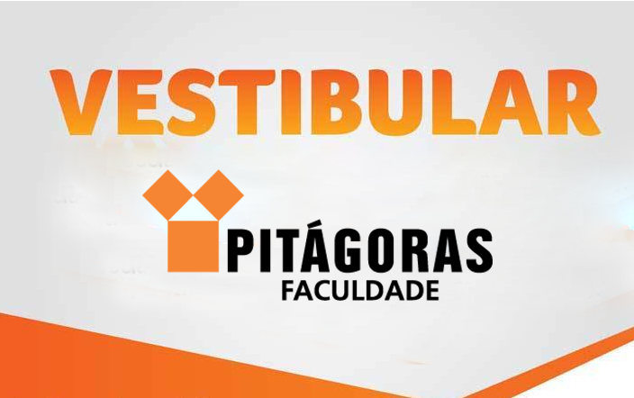

|  | O processo seletivo consiste em redação (100 pontos) e prova estilo ENEM (100 pontos), sendo 48 questões de múltipla escolha, que avaliam se o candidato é capaz de utilizar corretamente a Língua Portuguesa; compreender fenômenos naturais e processos histórico-geográficos; interpretar dados e informações para tomar decisões e enfrentar problemas e ainda, utilizar informações e conhecimentos para construir argumentação consistente.
VESTIBULAR AGENDADO: Você marca o dia e horário e faz a prova de acordo com a sua disponibilidade. saber mais... |